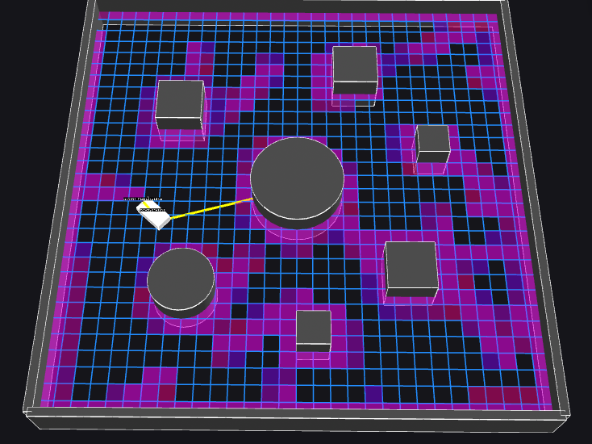

Autonomous Navigation System
The objective of this project was to design and implement an autonomous navigation system using ROS2, integrating perception, planning, and control modules to guide a robot safely through a simulated environment.

Demo
Overview
This project fundamentally changed my perspective on the high-level structure of autonomous robotics systems by highlighting how they can be broken up into three stages: perception, planning, and control. I also learned the value of testing in simulation using tools like Foxglove, which provided crucial insights into how the robot's perception and planning modules interacted in real-time. Simulation helped me inspect topic messages and verify map updates visually in real-time, speeding up the development process significantly.
Perception
Perception was handled by the costmap and map memory nodes, which is where I learned how to process LiDAR scans into a grid representation of space around the robot. This aspect of the project was the most difficult, as it required me to learn the underlying math required to transform between the robot's and global frames of reference and convert between discretized arrays and continuous world coordinates. Additionally, I was fortunate enough to have the underlying ROS2 network I built this project on provide critical odometry data, such as the robot's global pose, that would normally be difficult to obtain in real-world environments.
Planning
The planning stage was handled by the planner node, which is where I implemented the A* pathfinding algorithm to generate the safest and most efficient path between two points on the map. Realistically, autonomous robotics systems would also include more behavioral planning that optimizes with respect to other parameters like physical limitations and battery life.
Control
Finally, the control stage was handled by the control node, which employed the pure pursuit algorithm to minimize the robot's deviation from the path. Pure pursuit was chosen as it is one of the simplest control algorithms to implement, but alternatives like PID (proportional integral derivative) may have been more effective.
What I Learned
This project ultimately taught me about the immense benefits of implementing ROS2 in complex robotics systems. ROS2's modular framework and real-time communication tools greatly simplified the integration of perception, planning, and control. By leveraging ROS2's publish-subscribe architecture and its support for distributed systems, I was able to focus on implementing the core algorithms while relying on the middleware to handle reliable messaging and data sharing. This made the challenge of building a fully integrated autonomous system more manageable and helped me appreciate how ROS2 enables scalable, flexible, and efficient development for real-world robotics.
Note: this project is inspired by the University of Waterloo WATonomous design team's onboarding assignment.